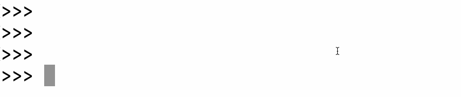

Many programs need a way to accept user input. In fact, one of my favorite parts of coding is making a program that accepts user input and then seeing what users pass into the program. You never know what users will say!
Python provides a built-in function for accepting input in command-line programs: input.
The input function takes a single optional argument, and displays that as the prompt. Here's what that looks like when used inside the Python console:
Once the user answer the prompts, the function returns the user's answer. The following code prompts a user and saves the answer into a variable:
answer = input('How are you? ')We could then use that answer in future expressions, as the input to function calls, inside a Boolean expression, etc.
Play around with the input examples below. Notice that this editor pops up a prompt in the browser, so the interface for this is different than running the same code in a local Python console.
feeling = input('And how are you today?')
print('I am also feeling ' + feeling)
ice_cream = input('Whats your fav ice cream?')
print('Mmmm, ' + ice_cream + ' on a hot day sounds so good!')The input function always returns the user input as a string. That’s all well and good if that’s what your code is expecting, but what if you are asking them a question with a numerical answer?
To convert a string to an integer, wrap it in int() and Python will attempt to construct an integer based on the string. For example:
int("33") # 33
int("0") # 0You can’t pass a string that looks like a floating point number to int() however. In that case, you need to use float().
float('33.33')
float('33.0')
float('33')If you’re not sure whether a user’s input is going to include a decimal point, the safest approach is to use float().
If you want to remove the digits after the decimal afterwards, you can then use either int(), round(), floor(), or ceil().
Play around with the example below; try giving floating point answers and see what happens.
from math import floor, ceil
answer = input('How old is the toddler?')
age = float(answer)
print('They are exactly ', age)
print('They are approx ', round(age))
print('They are older than ', floor(age))
print('They are no older than ', ceil(age))